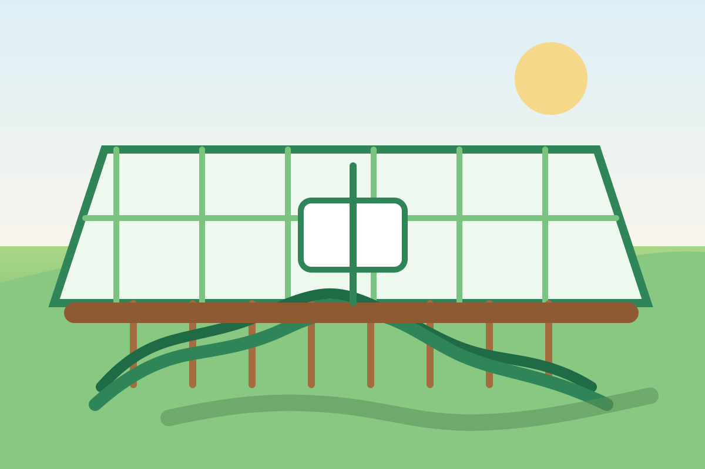

Ai trồng cây
Ai trồng cây Người đó có tiếng hát Trên vòm cây Chim hót lời mê say Ai trồng cây Người đó có ngọn gió Rung cành cây Hoa lá đùa lay lay Ai trồng cây Người đó có bóng mát Trong vòm cây Quên nắng xa đường dài Ai trồng cây Người đó có hạnh phúc Mong chờ cây Mau lớn theo từng ngày Ai trồng cây... Em trồng cây... Em trồng cây...

Khu vườn có hình ảnh, có nhịp chăm sóc, có dữ liệu và có những mùa vụ được theo dõi rõ ràng từ đầu đến cuối.
Hôm nay vườn .
Một mô hình thuyết phục vì những điều quan trọng nhất đều có thể nhìn thấy và đối chiếu
Từ cảm giác thật của khu vườn đến lớp bằng chứng chất lượng, mọi thứ được sắp xếp để người mới vẫn hiểu nhanh và thấy yên tâm khi tìm hiểu.
Nhìn thấy vườn 24/7
Camera live, snapshot theo mốc giờ và timelapse khiến khu vườn hiện diện như một phần sinh hoạt thật của gia đình.
AI diễn giải nhẹ nhàng
Không buộc khách đọc dữ liệu kỹ thuật. Hệ thống chỉ nói điều cần biết: hôm nay vườn ổn không, cần lưu ý gì và còn bao lâu nữa thu hoạch.
An toàn có bằng chứng
Care log, sensor, hình ảnh theo thời điểm và hồ sơ theo lô ghép lại thành một chuỗi niềm tin dễ kiểm tra.
Cảm giác sở hữu rõ ràng
Mỗi gia đình có tên vườn, nhịp mùa vụ, album tăng trưởng và một cổng riêng để quay lại bất cứ lúc nào.
Từ lúc đăng ký đến khi nhận lô rau đầu tiên, mỗi bước đều rõ ràng và có ý nghĩa thật
Đăng ký và trao đổi nhu cầu
Bắt đầu bằng một cuộc trò chuyện ngắn để hiểu gia đình đang cần gì và mô hình này có hợp hay không.
Nhận không gian theo dõi đầu tiên
Khoảnh khắc “à, đây là khu vườn của mình” thường bắt đầu từ lần mở portal đầu tiên.
Đọc care log và AI summary
Niềm tin tăng lên khi cả nhà hiểu ai đã chăm, chăm việc gì và vì sao khu vườn đang đi đúng nhịp.
Nhận lô đầu tiên cùng hồ sơ chất lượng
Kết quả là rau sạch cho gia đình, nhưng điều giữ khách ở lại là hành trình đồng hành mỗi ngày trước đó.
Phù hợp với người muốn rau sạch minh bạch hơn, và trân trọng cảm giác được theo dõi một hành trình thật
Công ty Cổ phần Nghiên cứu Giải pháp và Phát triển Công nghệ Xanh chịu trách nhiệm triển khai mô hình, vận hành hạ tầng theo dõi và tư vấn kích hoạt.
Hộ gia đình, cá nhân thích rau sạch minh bạch, muốn theo dõi quy trình thật và trân trọng cảm giác đồng hành dài hạn.
Để lại thông tin, nhận tư vấn gọn, xem khu vườn mẫu và chốt đợt kích hoạt khi lịch vận hành phù hợp đã sẵn sàng.
Không chỉ nhận rau, anh/chị đang theo dõi cả một quá trình lớn lên rất sống động và rất thật
Portal là nơi webcam, care log, dữ liệu môi trường và hồ sơ chất lượng đi cùng nhau để mỗi lần mở ra đều có cảm giác: khu vườn của mình hôm nay đang ra sao?
Cam live giúp khách thấy ánh sáng buổi sớm, lá non, độ sạch của khung vườn và sự thay đổi thật theo từng ngày.
Care log ghi rõ người thực hiện, giờ thực hiện, checklist, ảnh minh chứng và ghi chú cho mọi can thiệp quan trọng.
Hồ sơ chất lượng theo lô giúp bữa cơm gia đình yên tâm hơn, vì quyết định ăn gì được neo vào bằng chứng cụ thể.
Không chỉ có khu vườn số, còn có Chợ quê và Kho nông cụ để hành trình đầy đủ hơn

Một góc chợ số mộc mạc
Nơi cộng đồng đăng nông sản, nhu cầu mua bán và những trao đổi nhỏ nhưng rất đời thường.
Dạo Chợ quê
Gợi ý hạt giống, vật tư, bộ khởi đầu
Đặt ngay trong portal để việc chọn đồ bổ sung luôn gắn chặt với khu vườn đang theo dõi.
Mở Kho nông cụNhà mình mở portal mỗi tối như mở cửa nhìn vào một góc vườn nhỏ của chính mình.
Điểm chạm xúc cảm không nằm ở việc có bao nhiêu dữ liệu, mà ở chỗ con nhỏ cũng nhận ra rau hôm nay đã lớn hơn hôm qua.
— Chị Hạnh, gói Family, tuần thứ 12
Bốn lớp giúp khách ra quyết định êm hơn và chắc hơn
Nhà lưới, lịch vận hành, checklist kỹ thuật và nhịp chăm sóc được chuẩn hóa ngay từ đầu để khách không phải đoán.
Khách không cần hiểu chuyên môn sâu nhưng vẫn biết vườn đang ở trạng thái tốt hay cần chú ý điều gì.
Mỗi can thiệp quan trọng đều có thời gian, người thực hiện, ghi chú và ảnh đi kèm để tạo niềm tin tích lũy.
Mỗi đợt thu hoạch gắn với mã lô và hồ sơ chất lượng rõ ràng ngay trong portal của từng gia đình.
Những điều khách hay hỏi ngay trước khi để lại thông tin
Webcam live, snapshot theo mốc, tình trạng môi trường, care log, lô thu hoạch, AI summary và lịch sử mùa vụ trong một luồng rất dễ xem.
Có trạng thái thiết bị, lịch sử gián đoạn và ảnh dự phòng để anh/chị không bị mất nhịp theo dõi khu vườn.
Có. Cả nhà có thể cùng xem để ông bà hay các con đều giữ được những khoảnh khắc mình thích.
Bắt đầu với khu vườn số đầu tiên của gia đình anh/chị
Chỉ cần vài thông tin cơ bản để nhận đề xuất phù hợp, hiểu lộ trình triển khai và quyết định bước tiếp theo theo nhịp của mình.